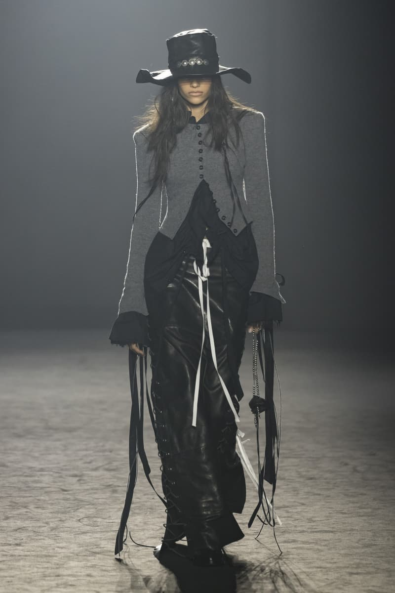
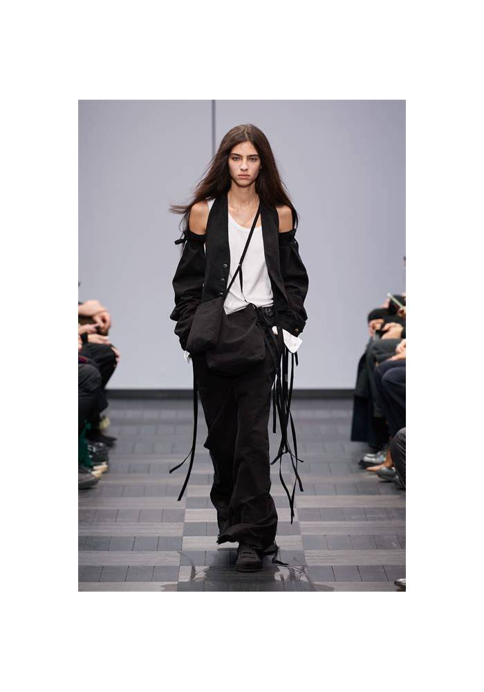
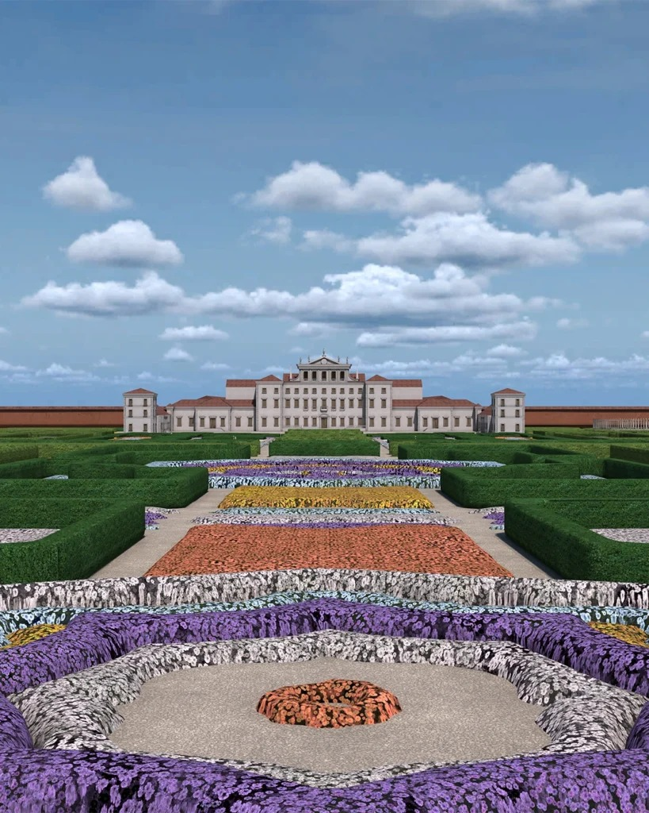
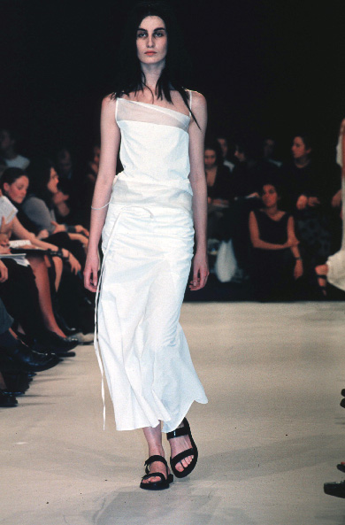
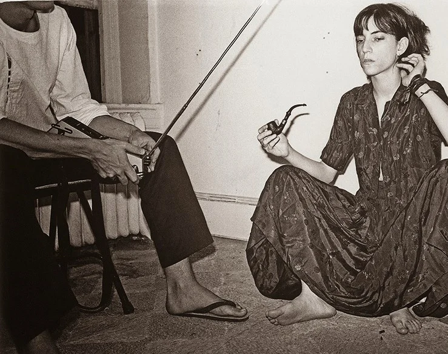

FW25 2025.3 巴黎
宽檐帽、垂坠丝带、灰针织与黑皮革——暗黑骑士的诗意。
推开一扇沉重的门，
你走进一座废弃的修道院。
光从破损的穹顶漏下来，
空气里有石头和时间的味道。
没有人，没有声音，
只有黑色衣角在角落一闪而过。
它的照片从来不像广告。更像你在旧书摊偶然翻到的一叠老照片——发黄、褪色、布满细密的颗粒。场景总是空荡荡的：荒漠里一座孤零零的土坯房，十八世纪庄园外雾气弥漫的庭院。人站在里面不是主角，更像是风景的一部分，正在慢慢融进去。摄影师好像故意不对准焦距——一切都是柔软的、梦幻的，像你努力回忆一个很久以前的梦。
而这一切的灵魂，藏在一个画面里。1975年，Patti Smith 站在 Robert Mapplethorpe 的镜头前：白衬衫，黑外套搭肩，黑丝带从领口垂下。她看着你，眼神不躲不闪，又冷又烫——既是诗人，也是战士。这幅画面击中了一个16岁的比利时女孩。很多年后，她把这种感觉做成了衣服。
如果你想亲眼看看：搜《Horses》封面，以及 2025秋冬 "Road to Never"（摄于 Ghost Ranch，Georgia O'Keeffe 的故居）。当你看到那些白衬衫在光里展开，就会明白——
有些美不需要解释，只需要感受。




